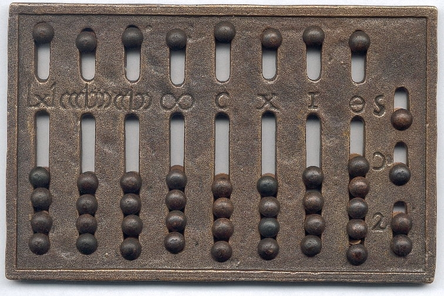

📜 Abakus – prvnà výpočetnà nástroj
Abakus je jeden z nejstarÅ¡Ãch výpočetnÃch nástrojů, vznikl před tisÃci lety v ÄŒÃně a Mezopotámii. Přestože byl jednoduchý – rám s tyčkami a kuličkami – umožňoval přesně sÄÃtat, odÄÃtat, násobit i dělit. Byl důležitým předchůdcem modernÃch poÄÃtačů, protože ukázal, že stroje mohou pomáhat lidem poÄÃtat.
⚙️ Prvnà mechanické poÄÃtače
Prvnà mechanické poÄÃtače vznikly v 17.–19. stoletÃ. Pascalin vytvořil Blaise Pascal pro svého otce, později Charles Babbage navrhl „analytický stroj“, který měl poÄÃtat podle programu. Jeho myšlenky ovlivnily vývoj informatiky.

💡 ZajÃmavost: rvnà program pro tento stroj napsala Ada Lovelace – matematička, kterou dnes mnozà považujà za vůbec prvnà programátorku na světě.

💻 Prvnà programovacà jazyky
Zpočátku poÄÃtače rozuměly jen binárnÃm kódům, které byly složité na psanÃ. Postupně vznikly prvnà programovacà jazyky jako Fortran a Assembly, které umožnily jednoduÅ¡Å¡Ã a srozumitelnějÅ¡Ã programovánÃ. DÃky tomu se mohl software rychleji rozvÃjet a technologie postupovaly vpřed.